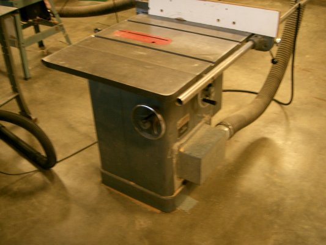

Table Saw
Table Saw Safety Tips:
- Make sure the blade is clean, sharp, and not missing teeth.
- Keep your hands out of the path of the blade, and use a pusher for small pieces
- Unplug the saw when changing blades or performing maintenance
- Have a support (like a table) at the end of the saw for long pieces of wood, and make sure
the wood will not hit the support.
- Use caution when cutting warped or knotty wood. These can put large stresses
on the saw.
- Always wear the appropriate eye and ear protection, and avoid loose clothing.
- Keep the area around the saw clear of scraps and dust.
Do not stand in line with the blade.
